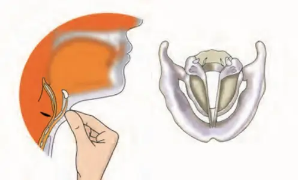

Sound is associated with vibrational or
oscillatory motion. The to-and-fro motion of an object is called vibration. Vibrations produce
various forms of energy, one of them is sound. Various objects vibrate in to produce sound. You
know
that there are a variety of musical instruments producing different type of sounds. Which part
of
the tabla, guitar or flute
vibrates? In a tabla, the two membranes vibrate and produce sound, whereas in case of a guitar,
the
strings vibrate. In a flute, the air column vibrates, producing sound. In humans sound is
produced
by an organ called larynx (commonly called voice box). When we speak, air rushes out of our
lungs to
larynx via windpipe. Larynx is located at top end of the windpipe. On the top of larynx there
are two membranes called vocal folds (commonly called vocal cords), which begins to vibrate when
of
air rushes in from below. There are muscles in the larynx that lengthen and shorten the vocal
cords
and alter the tension to produce different pitches. The space between the vocal fold is called
glottis. Different sound can be made by varying opening and closing of the glottis. Our mouth,
tongue teeth, lips and nasal cavity also helps us to produce basic sound.